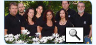

¿Quiénes somos?
La Fundación “C.I.C.” es una Organización No Gubernamental, filantrópica, cultural y sin fines de lucro, con sede en Trelew, provincia del Chubut, Patagonia Argentina.
Marco legal
- Personería Jurídica Nº 1761/97.
- Estatutos Sociales aprobados por Resolución 96/97 de la Inspección General de Justicia de la Provincia del Chubut.
- Habilitada legalmente para organizar conciertos y giras, dictar cursos de perfeccionamiento, actuar como Jurado y editar publicaciones.
Conducción
La Fundación es dirigida por un Consejo de Administración que cuenta como Presidente permanente al Prof. Alejandro Daniel Garavano.

El sitio de 2009 anunciaba un enlace “Ver autoridades” que nunca llegó a publicarse; la nómina completa del Consejo no se conserva en el archivo, por eso no se reproduce aquí.
Pertenencia institucional
Miembro Fundador de la OFADAC, socia del CAMU (CIM-UNESCO) y, en el ámbito mundial, afiliada a la CFN dentro del marco de la FIMC. Ver Relaciones Institucionales.